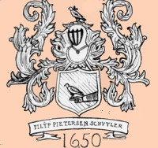
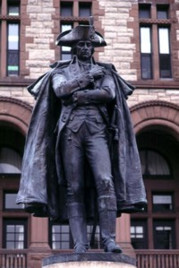

by
Stefan Bielinski
The Schuylers were foremost among early Albany's founders and leaders and became one of the most prominent New Netherland families in colonial New York!
The Schuyler story in America began with the arrival of brothers Philip Pieterse and David Pieterse about 1650. The rise of these one-time tradesmen is a classic early American success story! They were among the founders of the trading community called Beverwyck, prominent fur traders, and able to acquire land in what became the Albany hinterland.
By the close of the seventeenth century, nine Schuyler-named households were counted in the city of Albany. These included the homes of first mayor Pieter Schuyler and two more future mayors of the city.
During the first half of the eighteenth century, the Schuylers branched-out into greater Albany County - establishing country seats up and down the Hudson Valley, into New York City, and to New Jersey. They were able to intermarry with the most important colonial families thus establishing crucial kinship networks throughout the colony. With several untimely deaths, the Albany Schuylers experienced a temporary leadership void that was eased by the marriage of Elizabeth Schuyler to widower Robert Sanders in 1747.
In 1756, six Schuyler households were prominent on Albany's best streets with widow Schuyler's home a community landmark since the 1680s. Her son, General Philip Schuyler, built Schuyler Mansion, served in the colonial Assembly, was a General in the Revolutionary army, and served in the United State Senate. His business revolved around sawing and shipping lumber from his Saratoga estate. In 1790, the General's city estate called "the Pastures" was one of just two Schuyler households listed on the first Federal census. In 1815, the city directory named three Schuyler householders including Captain Samuel Schuyler.The possible connection of the Black Schuylers (descendants of Captain Samuel Schuyler) to the descendants of Philip and David Pieterse has not been established definitively!
Today, Schuyler Mansion State Historic Site, Schuyler Flats park, the Schuyler House in Schuylerville, Philip Schuyler Elementary School, Philip Schuyler condominiums, and dozens of local establishments commemorate the family today. For more than two hundred years, the name "Schuyler" has been used frequently across the country in the naming of places and organizations. It seems to connote the confidence and success that characterized early Albany's first family!
notes
Adaptation of a drawing of the Schuyler coat of arms copied from a stained glass window in the the First Church by Marcus T. Reynolds about 1916. Reproduced in an exhibition entitled State Street Stories (2002) at the University Art Museum. Collection of John G. Waite Associates. The coat of arms is described further by Kristin L. Gibbons in Christoph's Schuyler Genealogy, p. xv. Sources: Our work on the Schuyler family represents a textbook example of the viability of historical scholarship based primarily on family and community-based resources. At the same time, historians and genealogists have produced an impressive number of exemplary published resources that we use throughout our expositions. Chief among them are Christoph's Schuyler Genealogy; Don Gerlach's two volumes of a three-part biography of General Philip Schuyler; and a landmark antiquarian work by George Washington Schuyler entitled Colonial New York: Philip Schuyler and His Family (New York, 1885), two volumes.
Sources: Our work on the Schuyler family represents a textbook example of the viability of historical scholarship based primarily on family and community-based resources. At the same time, historians and genealogists have produced an impressive number of exemplary published resources that we use throughout our expositions. Chief among them are Christoph's Schuyler Genealogy; Don Gerlach's two volumes of a three-part biography of General Philip Schuyler; and a landmark antiquarian work by George Washington Schuyler entitled Colonial New York: Philip Schuyler and His Family (New York, 1885), two volumes.
Because they were so successful in the Albany setting,
the Schuyler name permeates the community-based historical record. At the
same time, strategic marriages of Schuyler
offspring makes them primary personages in the substantial scholarship focused
on the Van Cortlandt, Van Rensselaer, Livingston, and other elite early
New York families.
Follow this link to more on the Schuylers on this website!
Schuyler biographies on this website.
first posted: 9/20/03; last revised 11/15/04